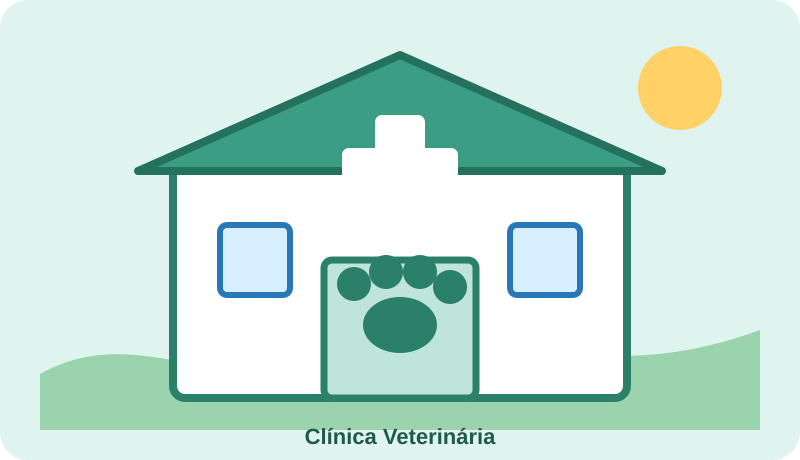

Cartão de atendimento
Consulta preventiva com avaliação geral do animal.
Observe no CSS como cada propriedade modifica uma característica visual.
Ver detalhesO que procurar no CSS
color,font-family,font-sizeeline-heightbackground-colorebackground-imagewidth,max-widthemin-heightborder,border-radiusebox-shadowmarginepadding